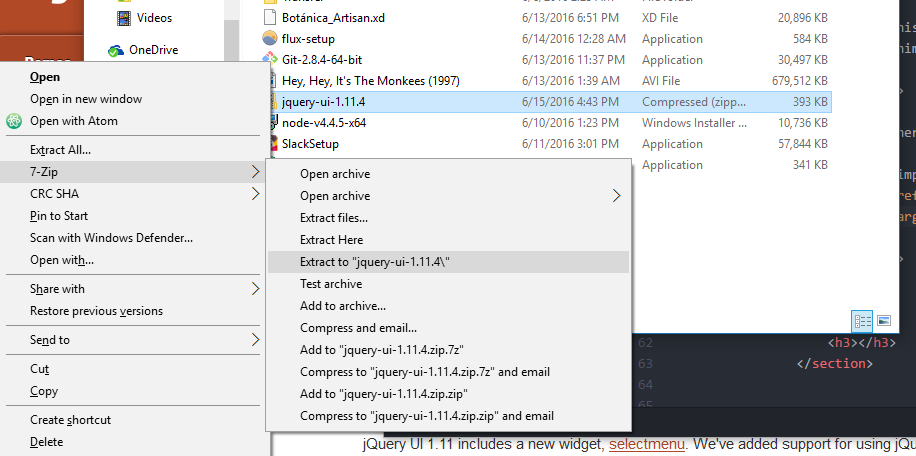
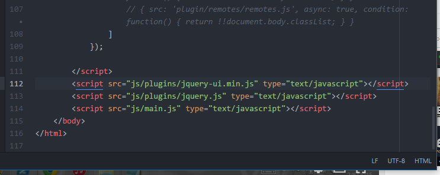
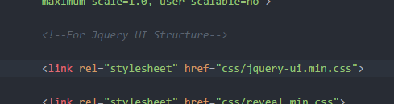
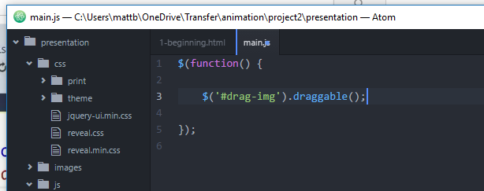
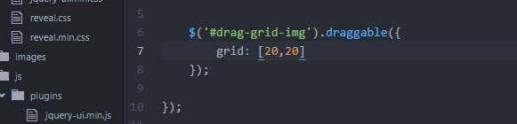
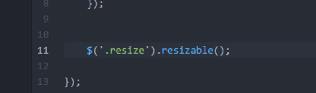

This plugin gives your page more attractive, animated interface.
Simple. You just go on over to this URL: https://jqueryui.com/
Extract the files to your project root and sort them as needed.
In your project index file, link your scripts. Your main script file, and Jquery, and whatever UI files you will be using, depending on your project.
There are also css files for structure in the UI elements.
Now that you've got your scripts in place, make sure they are all correctly applied in the console. Then begin writing some Jquery code in your main Javascript file.
Make objects draggable with a function like this!
Use Grid rules to make the dragging follow a grid!
There are a lot of options and a lot of really cool tricks for dragging objects. A lot of them are right here in the API Documentation
You can make objects resizable by doing a line of code like this.
That's just the tip of the iceberg. There is so much more in Jquery UI. It's got potential in just about anything. It's also got widget elements as well: